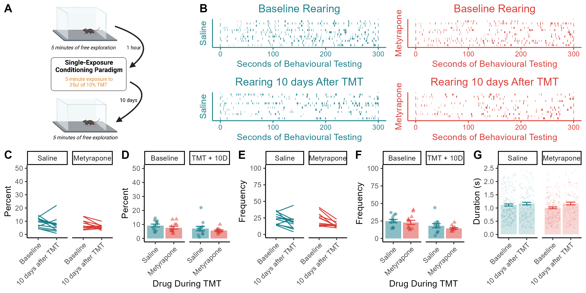

CORT_TMT Book of Analyses
About
Figure 1: TMT-Induced Freezing & CPA
Behavioral Response During TMT Presentation
Overall Time Spent Freezing / Rearing
Changes in Freezing Across the 5-minute Session
Number of Freezing / Rearing Episodes
Bout Duration for Freezing and Rearing
Changes in Bout Length of Freezing Across the 5-minute Session
Conditioned Place Aversion to TMT
Baseline Preferences
Test Session
Figure 2: Basal Freezing Before & After TMT
Time Spent Freezing Before / After TMT
Freezing Frequency
Freezing Bout Length
Figure 3: A 30-Minute TMT Exposure
Time Spent Freezing & Rearing During Prolonged TMT Exposure
Freezing Frequency and Bout Duration
Rearing Frequency and Bout Duration
Figure 4: A Second TMT Exposure
Time Spent Rearing and Freezing
Changes In Freezing Across the Session
Freezing Frequency
Freezing Bout Duration
Figure 5: Restraint / Footshock Experiments
Restraint Priming
Footshock Priming
S1
: Basal Rearing Before & After TMT
Published Figure
Link to Paper
Corticosterone regulates the balance between freezing and rearing in defensive responses to predator threat
S1
: Basal Rearing Before & After TMT
Published Figure
